vignettes/overview.Rmd
overview.Rmdincidence implements functions and classes to compute, handle, visualise and model incidences from dates data. This vignette provides an overview of current features. It largely reproduces the content of REAME.md.
To install the current stable, CRAN version of the package, type:
install.packages("incidence")
To benefit from the latest features and bug fixes, install the development, github version of the package using:
devtools::install_github("reconhub/incidence")
Note that this requires the package devtools installed.
The main functions of the package include:
incidence: compute incidence from dates in various formats; any fixed time interval can be used; the returned object is an instance of the (S3) class incidence.
plot: this method (see ?plot.incidence for details) plots incidence objects, and can also add predictions of the model(s) contained in an incidence_fit object (or a list of such objects).
fit: fit one or two exponential models (i.e. linear regression on log-incidence) to an incidence object; two models are calibrated only if a date is provided to split the time series in two (argument split); this is typically useful to model the two phases of exponential growth, and decrease of an outbreak; each model returned is an instance of the (S3) class incidence_fit, each of which contains various useful information (e.g. growth rate r, doubling/halving time, predictions and confidence intervals); results can be plotted using plot, or added to an existing uncudence plot using the piping-friendly function add_incidence_fit.
fit_optim_split: finds the optimal date to split the time series in two, typically around the peak of the epidemic.
[: lower-level subsetting of incidence objects, permitting to specify which dates and groups to retain; uses a syntax similar to matrices, i.e. x[i, j], where x is the incidence object, i a subset of dates, and j a subset of groups.
subset: subset an incidence object by specifying a time window.
pool: pool incidence from different groups into one global incidence time series.
cumulate: computes cumulative incidence over time from and incidence object.
as.data.frame: converts an incidence object into a data.frame containing dates and incidence values.
bootstrap: generates a bootstrapped incidence object by re-sampling, with replacement, the original dates of events.
find_peak: locates the peak time of the epicurve.
estimate_peak: uses bootstrap to estimate the peak time (and related confidence interval) of a partially observed outbreak.
This example uses the simulated Ebola Virus Disease (EVD) outbreak from the package outbreaks. We will compute incidence for various time steps, calibrate two exponential models around the peak of the epidemic, and analyse the results.
First, we load the data:
We compute the daily incidence:
i <- incidence(dat) i #> <incidence object> #> [5888 cases from days 2014-04-07 to 2015-04-30] #> #> $counts: matrix with 389 rows and 1 columns #> $n: 5888 cases in total #> $dates: 389 dates marking the left-side of bins #> $interval: 1 day #> $timespan: 389 days #> $cumulative: FALSE plot(i)
The daily incidence is quite noisy, but we can easily compute other incidence using larger time intervals:
# weekly, starting on Monday (ISO week, default) i.7 <- incidence(dat, interval = "1 week") plot(i.7)
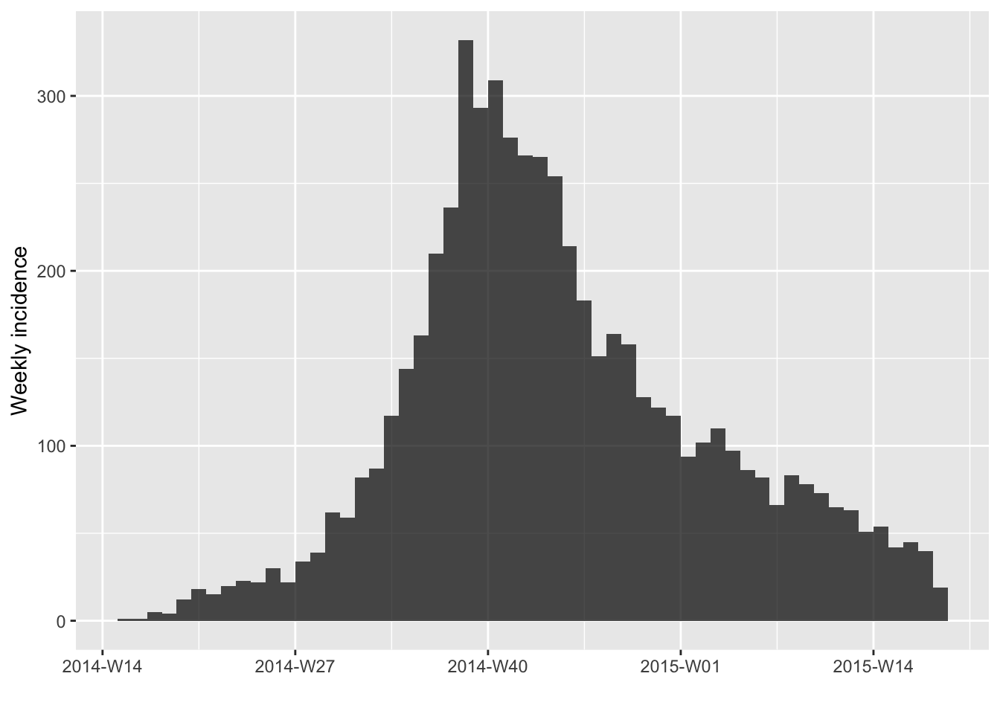
# semi-weekly, starting on Saturday i.14 <- incidence(dat, interval = "2 saturday weeks") plot(i.14, border = "white")
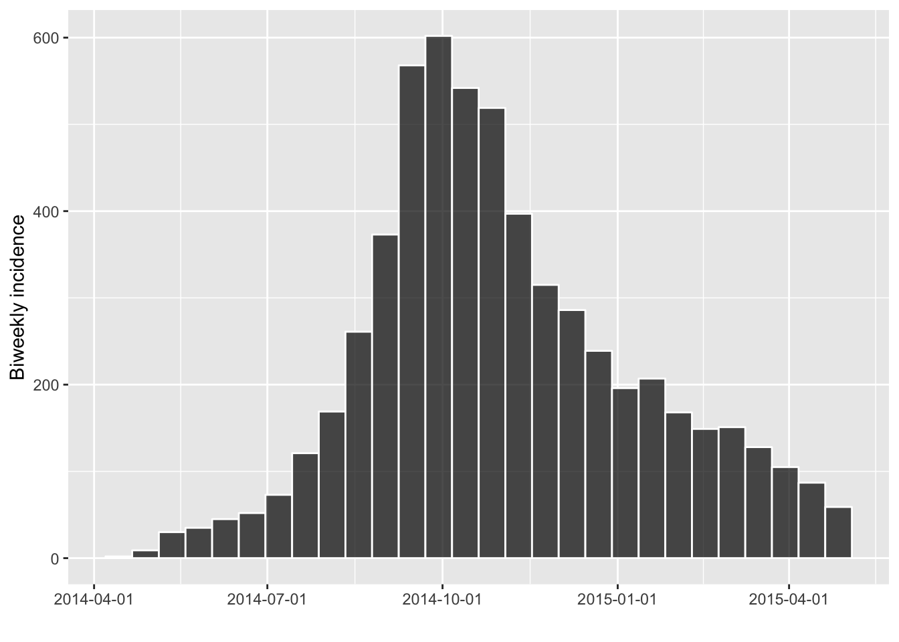
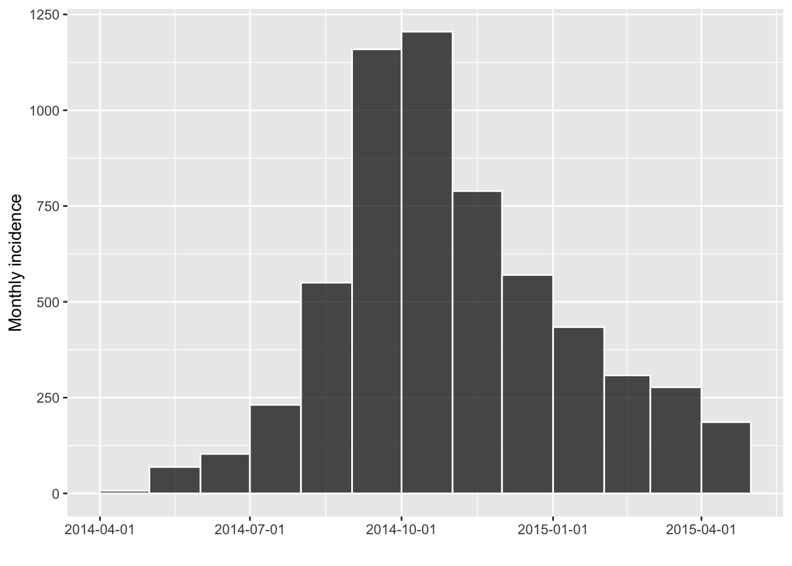
incidence can also compute incidence by specified groups using the groups argument. For instance, we can compute incidence by gender:
i.7.sex <- incidence(dat, interval = "1 week", groups = ebola_sim$linelist$gender) i.7.sex #> <incidence object> #> [5888 cases from days 2014-04-07 to 2015-04-27] #> [5888 cases from ISO weeks 2014-W15 to 2015-W18] #> [2 groups: f, m] #> #> $counts: matrix with 56 rows and 2 columns #> $n: 5888 cases in total #> $dates: 56 dates marking the left-side of bins #> $interval: 1 week #> $timespan: 386 days #> $cumulative: FALSE plot(i.7.sex, stack = TRUE, border = "grey")
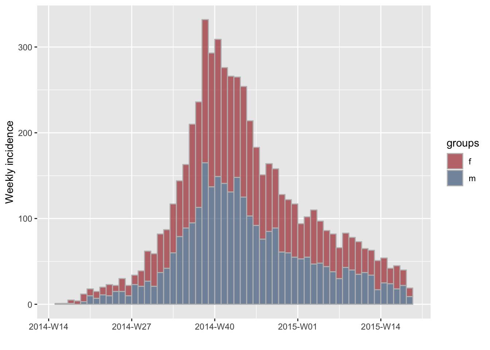
We can do the same for hospitals, using the ‘clean’ version of the dataset, with some customization of the legend:
i.7.hosp <- with(ebola_sim_clean$linelist, incidence(date_of_onset, interval = "week", groups = hospital)) i.7.hosp #> <incidence object> #> [5829 cases from days 2014-04-07 to 2015-04-27] #> [5829 cases from ISO weeks 2014-W15 to 2015-W18] #> [6 groups: Connaught Hospital, Military Hospital, other, Princess Christian Maternity Hospital (PCMH), Rokupa Hospital, NA] #> #> $counts: matrix with 56 rows and 6 columns #> $n: 5829 cases in total #> $dates: 56 dates marking the left-side of bins #> $interval: 1 week #> $timespan: 386 days #> $cumulative: FALSE head(get_counts(i.7.hosp)) #> Connaught Hospital Military Hospital other #> [1,] 0 1 0 #> [2,] 1 0 0 #> [3,] 0 0 3 #> [4,] 1 0 0 #> [5,] 3 5 1 #> [6,] 2 4 5 #> Princess Christian Maternity Hospital (PCMH) Rokupa Hospital NA #> [1,] 0 0 0 #> [2,] 0 0 0 #> [3,] 0 0 2 #> [4,] 1 1 1 #> [5,] 1 1 1 #> [6,] 1 1 4 plot(i.7.hosp, stack=TRUE) + theme(legend.position= "top") + labs(fill="")
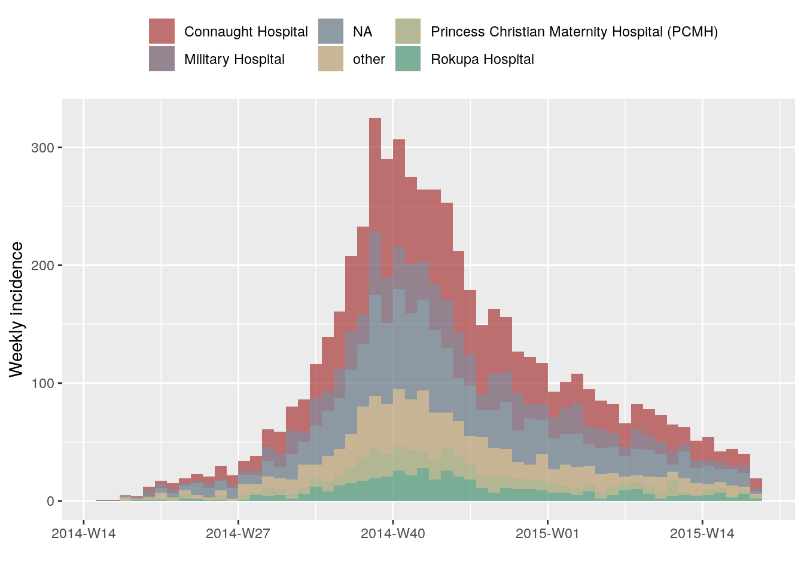
incidence objectsincidence objects can be manipulated easily. The [ operator implements subsetting of dates (first argument) and groups (second argument). For instance, to keep only the peak of the distribution:
i[100:250] #> <incidence object> #> [4103 cases from days 2014-07-15 to 2014-12-12] #> #> $counts: matrix with 151 rows and 1 columns #> $n: 4103 cases in total #> $dates: 151 dates marking the left-side of bins #> $interval: 1 day #> $timespan: 151 days #> $cumulative: FALSE plot(i[100:250])
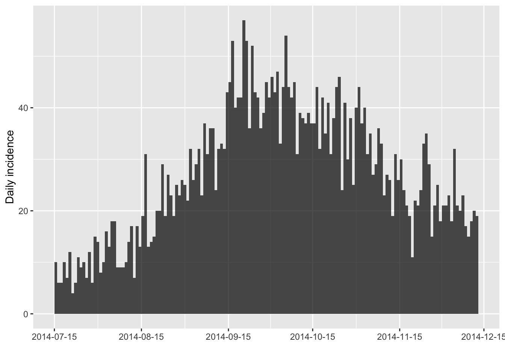
Or to keep every other week:
i.7[c(TRUE,FALSE)] #> <incidence object> #> [2891 cases from days 2014-04-07 to 2015-04-20] #> [2891 cases from ISO weeks 2014-W15 to 2015-W17] #> #> $counts: matrix with 28 rows and 1 columns #> $n: 2891 cases in total #> $dates: 28 dates marking the left-side of bins #> $interval: 1 week #> $timespan: 379 days #> $cumulative: FALSE plot(i.7[c(TRUE,FALSE)])
Some temporal subsetting can be even simpler using subset, which permits to retain data within a specified time window:
i.tail <- subset(i, from=as.Date("2015-01-01")) i.tail #> <incidence object> #> [1205 cases from days 2015-01-01 to 2015-04-30] #> #> $counts: matrix with 120 rows and 1 columns #> $n: 1205 cases in total #> $dates: 120 dates marking the left-side of bins #> $interval: 1 day #> $timespan: 120 days #> $cumulative: FALSE plot(i.tail, border="white")
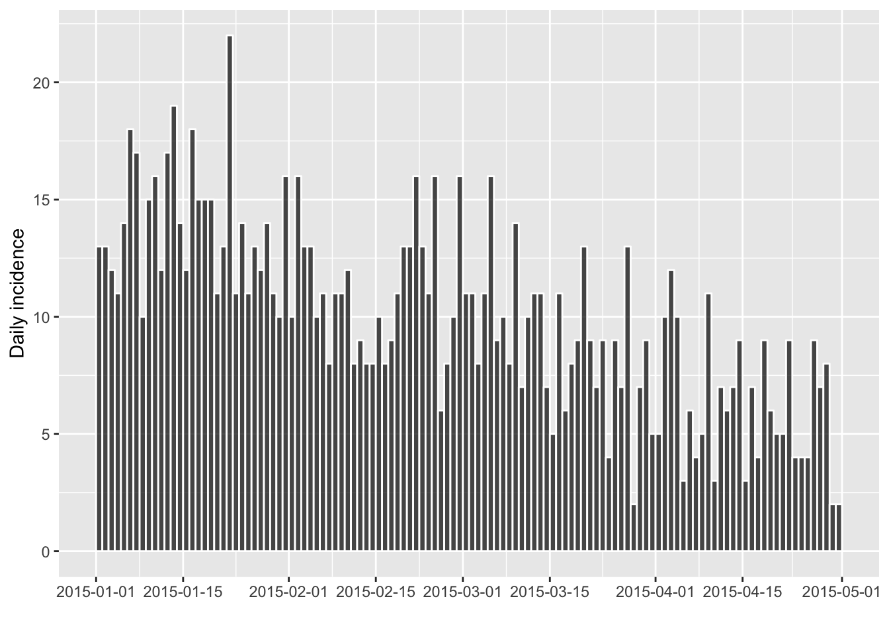
Subsetting groups can also matter. For instance, let’s try and visualise the incidence based on onset of symptoms by outcome:
i.7.outcome <- incidence(dat, 7, groups=ebola_sim$linelist$outcome) i.7.outcome #> <incidence object> #> [5888 cases from days 2014-04-07 to 2015-04-27] #> [5888 cases from ISO weeks 2014-W15 to 2015-W18] #> [3 groups: Death, Recover, NA] #> #> $counts: matrix with 56 rows and 3 columns #> $n: 5888 cases in total #> $dates: 56 dates marking the left-side of bins #> $interval: 7 days #> $timespan: 386 days #> $cumulative: FALSE plot(i.7.outcome, stack = TRUE, border = "grey")
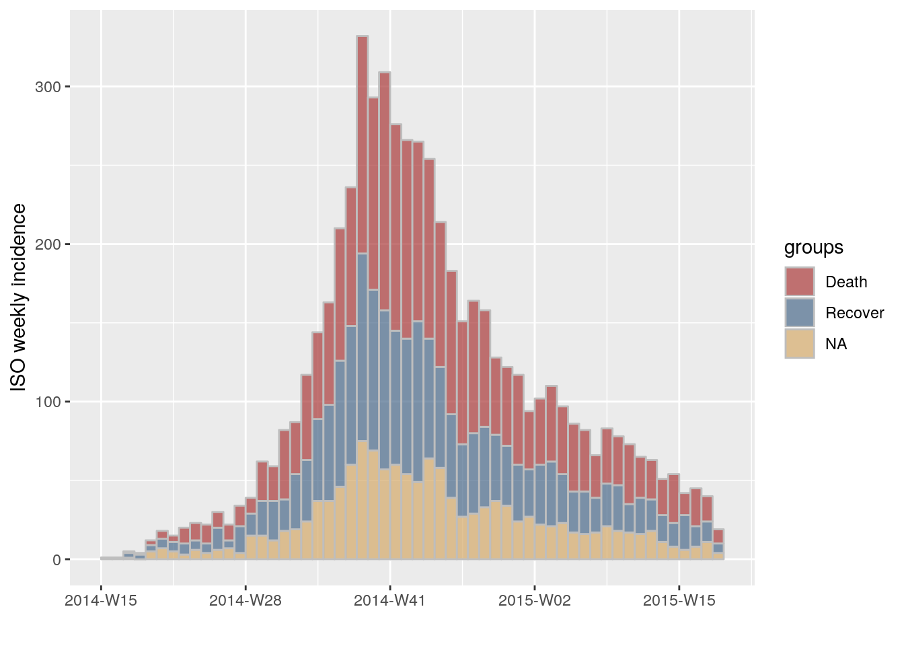
By default, incidence treats missing data (NA) as a separate group (see argument na_as_group). We could disable this to retain only known outcomes, but alternatively we can simply subset the object to exclude the last (3rd) group:
i.7.outcome[,1:2] #> <incidence object> #> [4565 cases from days 2014-04-07 to 2015-04-27] #> [4565 cases from ISO weeks 2014-W15 to 2015-W18] #> [2 groups: Death, Recover] #> #> $counts: matrix with 56 rows and 2 columns #> $n: 4565 cases in total #> $dates: 56 dates marking the left-side of bins #> $interval: 7 days #> $timespan: 386 days #> $cumulative: FALSE plot(i.7.outcome[,1:2], stack = TRUE, border = "grey")
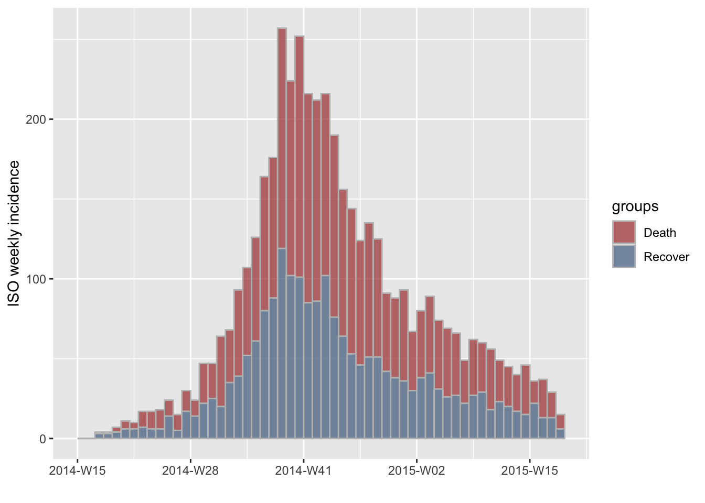
Groups can also be collapsed into a single time series using pool:
i.pooled <- pool(i.7.outcome) i.pooled #> <incidence object> #> [5888 cases from days 2014-04-07 to 2015-04-27] #> [5888 cases from ISO weeks 2014-W15 to 2015-W18] #> #> $counts: matrix with 56 rows and 1 columns #> $n: 5888 cases in total #> $dates: 56 dates marking the left-side of bins #> $interval: 7 days #> $timespan: 386 days #> $cumulative: FALSE identical(i.7$counts, i.pooled$counts) #> [1] TRUE
Incidence data, excluding zeros, can be modelled using log-linear regression of the form: log(y) = r x t + b
where y is the incidence, r is the growth rate, t is the number of days since a specific point in time (typically the start of the outbreak), and b is the intercept.
Such model can be fitted to any incidence object using fit. Of course, a single log-linear model is not sufficient for modelling our epidemic curve, as there is clearly an growing and a decreasing phase. As a start, we can calibrate a model on the first 20 weeks of the epidemic:
plot(i.7[1:20])
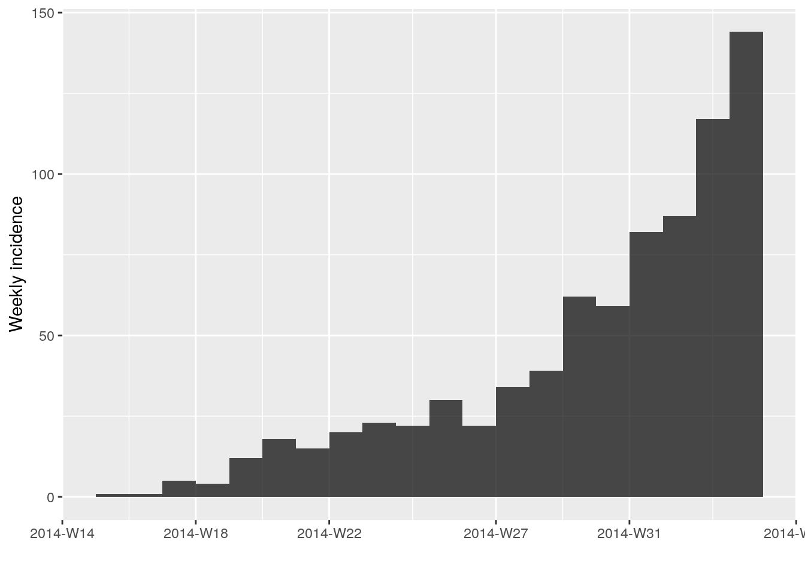
early.fit <- fit(i.7[1:20]) early.fit #> <incidence_fit object> #> #> $model: regression of log-incidence over time #> #> $info: list containing the following items: #> $r (daily growth rate): #> [1] 0.03175771 #> #> $r.conf (confidence interval): #> 2.5 % 97.5 % #> [1,] 0.02596229 0.03755314 #> #> $doubling (doubling time in days): #> [1] 21.8261 #> #> $doubling.conf (confidence interval): #> 2.5 % 97.5 % #> [1,] 18.45777 26.69823 #> #> $pred: data.frame of incidence predictions (20 rows, 5 columns)
The resulting objects (known as incidence_fit objects) can be plotted, in which case the prediction and its confidence interval is displayed:
plot(early.fit)
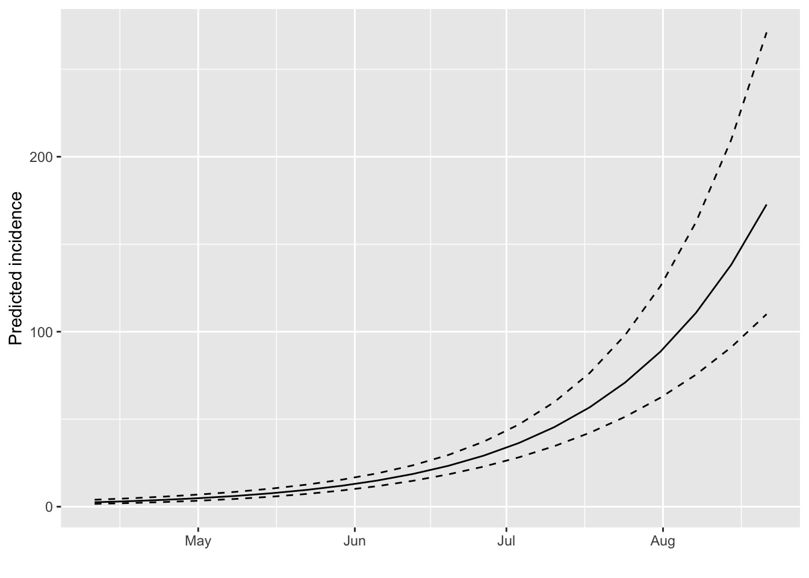
However, a better way to display these predictions is adding them to the incidence plot using the argument fit:
plot(i.7[1:20], fit = early.fit)
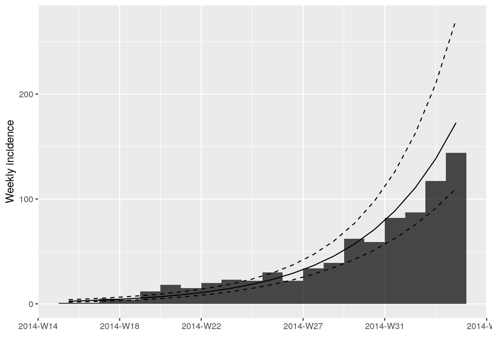
In this case, we would ideally like to fit two models, before and after the peak of the epidemic. This is possible using the following approach, if you know what date to use to split the data in two phases:
fit.both <- fit(i.7, split=as.Date("2014-10-15")) fit.both #> <list of incidence_fit objects> #> #> attr(x, 'locations'): list of vectors with the locations of each incidence_fit object #> #> 'before' #> 'after' #> #> $model: regression of log-incidence over time #> #> $info: list containing the following items: #> $r (daily growth rate): #> before after #> 0.02741985 -0.01014465 #> #> $r.conf (confidence interval): #> 2.5 % 97.5 % #> before 0.02407933 0.030760379 #> after -0.01127733 -0.009011981 #> #> $doubling (doubling time in days): #> before #> 25.27902 #> #> $doubling.conf (confidence interval): #> 2.5 % 97.5 % #> before 22.53377 28.78598 #> #> $halving (halving time in days): #> after #> 68.32636 #> #> $halving.conf (confidence interval): #> 2.5 % 97.5 % #> after 61.46379 76.91397 #> #> $pred: data.frame of incidence predictions (56 rows, 6 columns) plot(i.7, fit=fit.both)
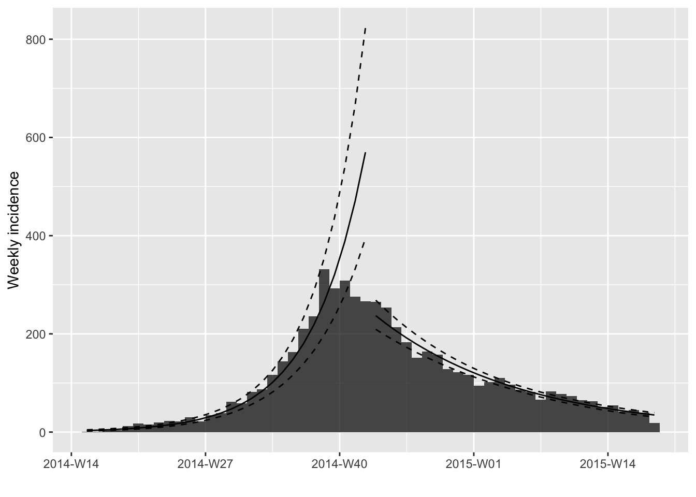
This is much better, but the splitting date is not completely optimal. To look for the best possible splitting date (i.e. the one maximizing the average fit of both models), we use:
best.fit <- fit_optim_split(i.7) best.fit #> $df #> dates mean.R2 #> 1 2014-08-04 0.7650406 #> 2 2014-08-11 0.8203351 #> 3 2014-08-18 0.8598316 #> 4 2014-08-25 0.8882682 #> 5 2014-09-01 0.9120857 #> 6 2014-09-08 0.9246023 #> 7 2014-09-15 0.9338797 #> 8 2014-09-22 0.9339813 #> 9 2014-09-29 0.9333246 #> 10 2014-10-06 0.9291131 #> 11 2014-10-13 0.9232523 #> 12 2014-10-20 0.9160439 #> 13 2014-10-27 0.9071665 #> #> $split #> [1] "2014-09-22" #> #> $fit #> <list of incidence_fit objects> #> #> attr(x, 'locations'): list of vectors with the locations of each incidence_fit object #> #> 'before' #> 'after' #> #> $model: regression of log-incidence over time #> #> $info: list containing the following items: #> $r (daily growth rate): #> before after #> 0.02982209 -0.01016191 #> #> $r.conf (confidence interval): #> 2.5 % 97.5 % #> before 0.02608945 0.033554736 #> after -0.01102526 -0.009298561 #> #> $doubling (doubling time in days): #> before #> 23.24274 #> #> $doubling.conf (confidence interval): #> 2.5 % 97.5 % #> before 20.65721 26.5681 #> #> $halving (halving time in days): #> after #> 68.21031 #> #> $halving.conf (confidence interval): #> 2.5 % 97.5 % #> after 62.86899 74.54349 #> #> $pred: data.frame of incidence predictions (57 rows, 6 columns) #> #> $plot
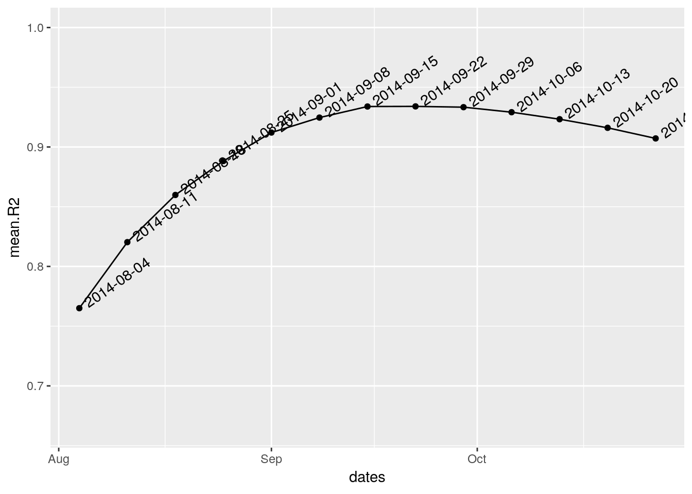
plot(i.7, fit=best.fit$fit)
These models are very good approximation of these data, showing a doubling time of 23.2 days during the first phase, and a halving time of 68.2 days during the second. To access these parameters, you can use the get_info() function.
The possible parameters are:
For “r”, “doubling”, and “halving”, you can also add “.conf” to get the confidence intervals. Here’s how you can get the doubling and halving times of the above epi curve:
get_info(best.fit$fit, "doubling") # doubling time #> before #> 23.24274 get_info(best.fit$fit, "doubling.conf") # confidence interval #> 2.5 % 97.5 % #> before 20.65721 26.5681 get_info(best.fit$fit, "halving") #> after #> 68.21031 get_info(best.fit$fit, "halving.conf") #> 2.5 % 97.5 % #> after 62.86899 74.54349
Note that fit will also take groups into account if incidence has been computed for several groups:
best.fit2 <- fit_optim_split(i.7.sex) best.fit2 #> $df #> dates mean.R2 groups #> 1 2014-08-04 0.7546016 f #> 2 2014-08-11 0.8096672 f #> 3 2014-08-18 0.8513743 f #> 4 2014-08-25 0.8864424 f #> 5 2014-09-01 0.9165063 f #> 6 2014-09-08 0.9270248 f #> 7 2014-09-15 0.9345352 f #> 8 2014-09-22 0.9350323 f #> 9 2014-09-29 0.9339121 f #> 10 2014-10-06 0.9288956 f #> 11 2014-10-13 0.9226037 f #> 12 2014-10-20 0.9122727 f #> 13 2014-10-27 0.9027890 f #> 14 2014-08-04 0.7566712 m #> 15 2014-08-11 0.8164693 m #> 16 2014-08-18 0.8567850 m #> 17 2014-08-25 0.8820669 m #> 18 2014-09-01 0.9006668 m #> 19 2014-09-08 0.9166004 m #> 20 2014-09-15 0.9271862 m #> 21 2014-09-22 0.9263339 m #> 22 2014-09-29 0.9260695 m #> 23 2014-10-06 0.9216350 m #> 24 2014-10-13 0.9144120 m #> 25 2014-10-20 0.9077086 m #> 26 2014-10-27 0.8966333 m #> #> $plot
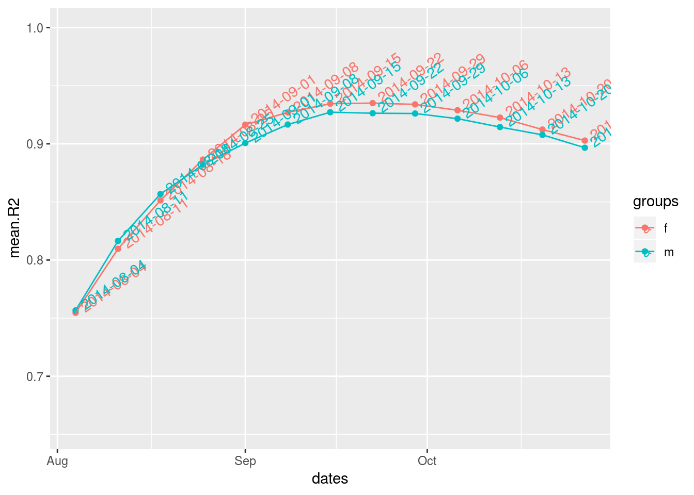
#>
#> $split
#> f m
#> "2014-09-22" "2014-09-15"
#>
#> $fit
#> <list of incidence_fit objects>
#>
#> attr(x, 'locations'): list of vectors with the locations of each incidence_fit object
#>
#> 'f', 'before'
#> 'm', 'before'
#> 'f', 'after'
#> 'm', 'after'
#>
#> $model: regression of log-incidence over time
#>
#> $info: list containing the following items:
#> $r (daily growth rate):
#> f_before m_before f_after m_after
#> 0.02570604 0.02883607 -0.01002297 -0.01038307
#>
#> $r.conf (confidence interval):
#> 2.5 % 97.5 %
#> f_before 0.02289333 0.028518743
#> m_before 0.02502254 0.032649606
#> f_after -0.01102735 -0.009018595
#> m_after -0.01138910 -0.009377034
#>
#> $doubling (doubling time in days):
#> f_before m_before
#> 26.96437 24.03750
#>
#> $doubling.conf (confidence interval):
#> 2.5 % 97.5 %
#> f_before 24.30497 30.27725
#> m_before 21.22988 27.70091
#>
#> $halving (halving time in days):
#> f_after m_after
#> 69.15586 66.75746
#>
#> $halving.conf (confidence interval):
#> 2.5 % 97.5 %
#> f_after 62.85711 76.85756
#> m_after 60.86059 73.91966
#>
#> $pred: data.frame of incidence predictions (111 rows, 7 columns)
plot(i.7.sex, fit=best.fit2$fit)
#> Scale for 'colour' is already present. Adding another scale for 'colour',
#> which will replace the existing scale.
#> Scale for 'colour' is already present. Adding another scale for 'colour',
#> which will replace the existing scale.
#> Scale for 'colour' is already present. Adding another scale for 'colour',
#> which will replace the existing scale.
#> Scale for 'colour' is already present. Adding another scale for 'colour',
#> which will replace the existing scale.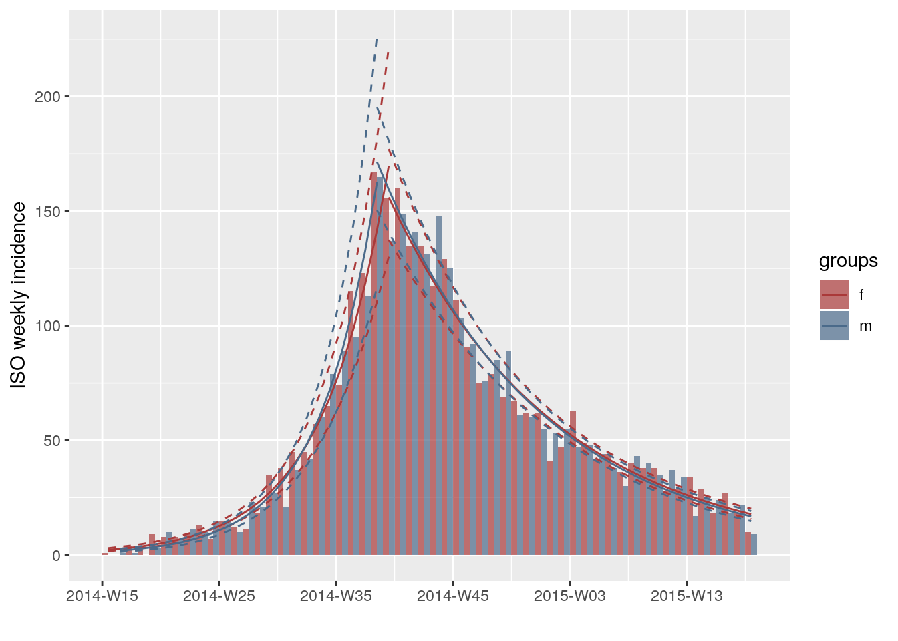
Using get_info() on this fit object will return all groups together:
get_info(best.fit2$fit, "doubling") # doubling time #> f_before m_before #> 26.96437 24.03750 get_info(best.fit2$fit, "doubling.conf") # confidence interval #> 2.5 % 97.5 % #> f_before 24.30497 30.27725 #> m_before 21.22988 27.70091 get_info(best.fit2$fit, "halving") #> f_after m_after #> 69.15586 66.75746 get_info(best.fit2$fit, "halving.conf") #> 2.5 % 97.5 % #> f_after 62.85711 76.85756 #> m_after 60.86059 73.91966